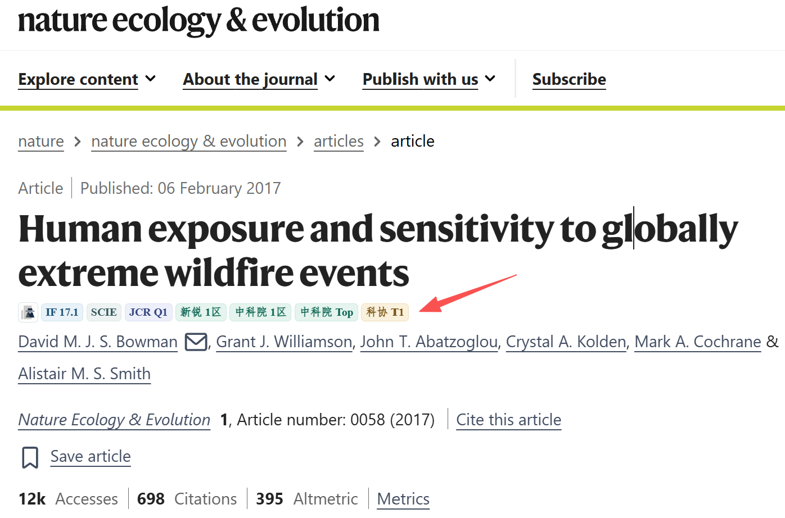
效果展示
点击图片查看原图。
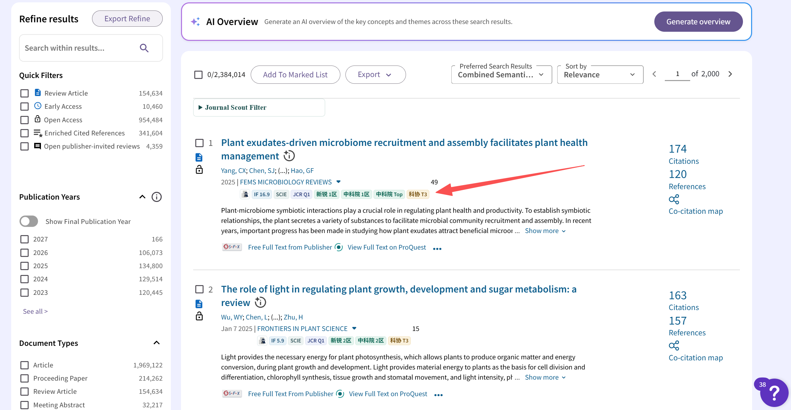
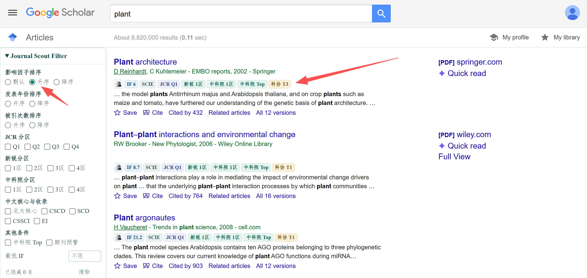
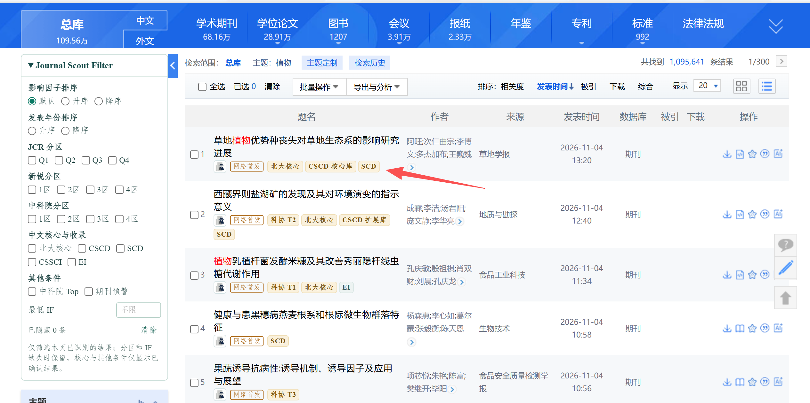
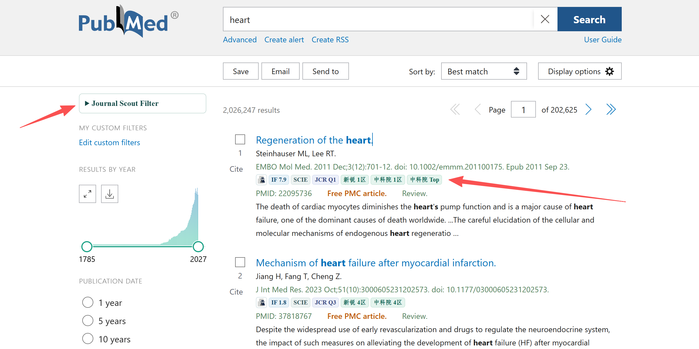
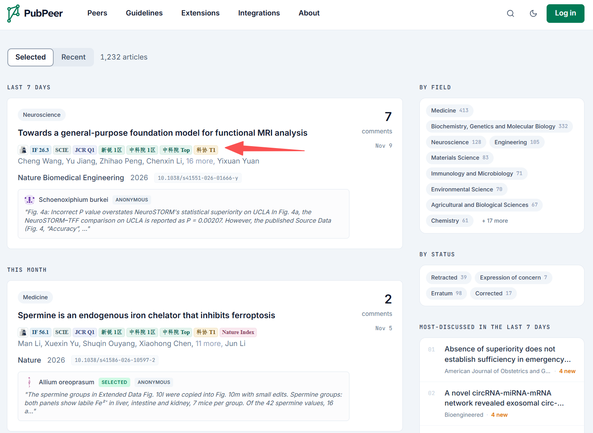
选择你的浏览器
商店版自动更新；离线版需要手动更新。
浏览器插件更新与迁移
离线版更新：下载并覆盖原文件，在扩展管理页重新加载。曾使用测试包的用户请重新下载；版本号相同或回退时，旧包可能无法自动提示更新。切换安装方式前请导出收藏并停用旧版；设置不互通。
返回 Journal Scout请选择一种方式，避免重复安装。
安装步骤
安装步骤
- 下载并解压下载上方 ZIP，解压后保留文件夹。
- 打开 Edge 扩展页在地址栏输入
edge://extensions，打开「开发人员模式」。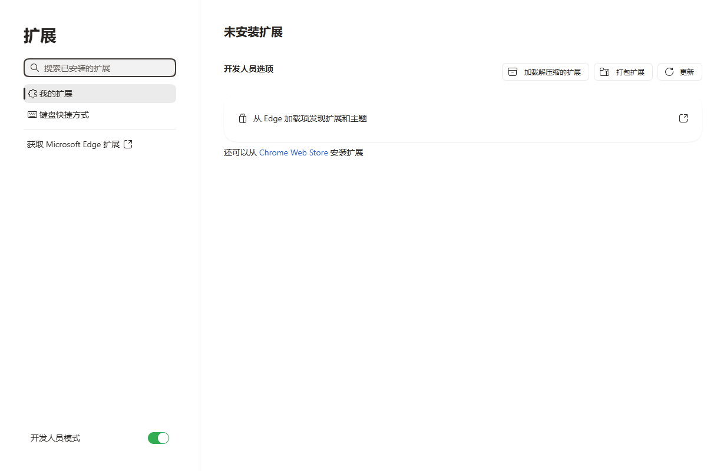
Edge 离线安装 打开开发人员模式后，选择「加载解压缩的扩展」。点击图片查看原图。 - 加载插件点击「加载解压缩的扩展」，选择解压后的文件夹（里面有
manifest.json）。
手动更新：新版本发布后下载新版 ZIP，解压并覆盖原文件，再到 edge://extensions 点击「重新加载」。
请选择一种方式，避免重复安装。
安装步骤
- 添加插件在商店点击「添加至 Chrome」并确认。
- 开始使用在工具栏固定 Journal Scout，再刷新论文页面。
安装步骤
- 下载并解压下载上方 ZIP，解压后保留文件夹。
- 打开 Chrome 扩展页在地址栏输入
chrome://extensions，打开右上角的「开发者模式」。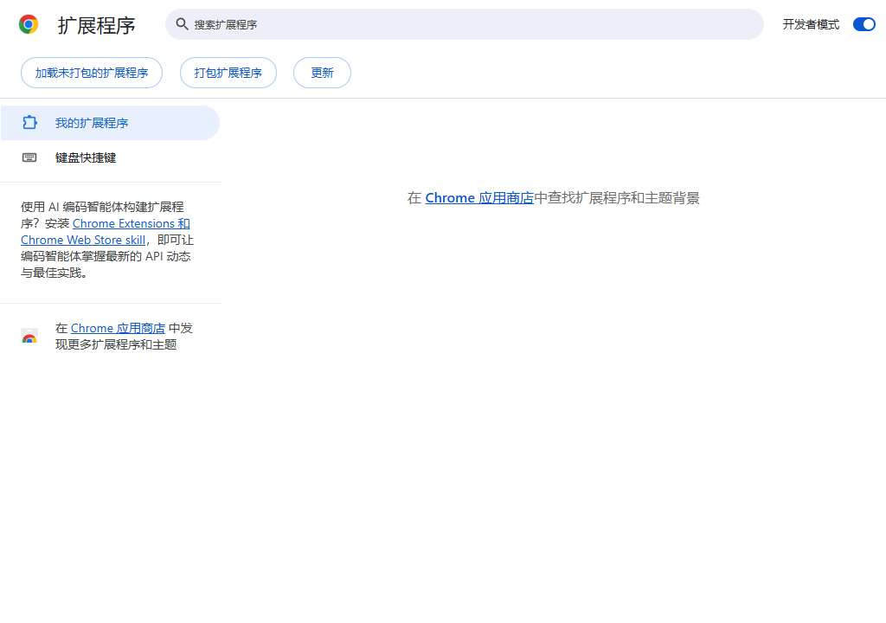
Chrome 离线安装 点击图片查看原图。 - 加载插件点击「加载已解压的扩展程序」，选择解压后的文件夹（里面有
manifest.json）。 - 开始使用在工具栏扩展菜单中固定 Journal Scout，再刷新已打开的论文页面。
手动更新：新版本发布后下载新版 ZIP，解压并覆盖原文件，再到 chrome://extensions 点击「重新加载」。
推荐使用官方商店版，避免重复安装。
安装步骤
- 添加插件在 Firefox 扩展商店点击「添加到 Firefox」并确认。
- 开始使用在工具栏固定 Journal Scout，再刷新论文页面。
- 下载测试包下载上面的 XPI 文件，无需解压。
- 打开调试页面在 Firefox 地址栏输入
about:debugging#/runtime/this-firefox并回车。 - 临时载入点击「临时载入附加组件」（Load Temporary Add-on），选择刚才下载的 XPI 文件，然后刷新论文页面。
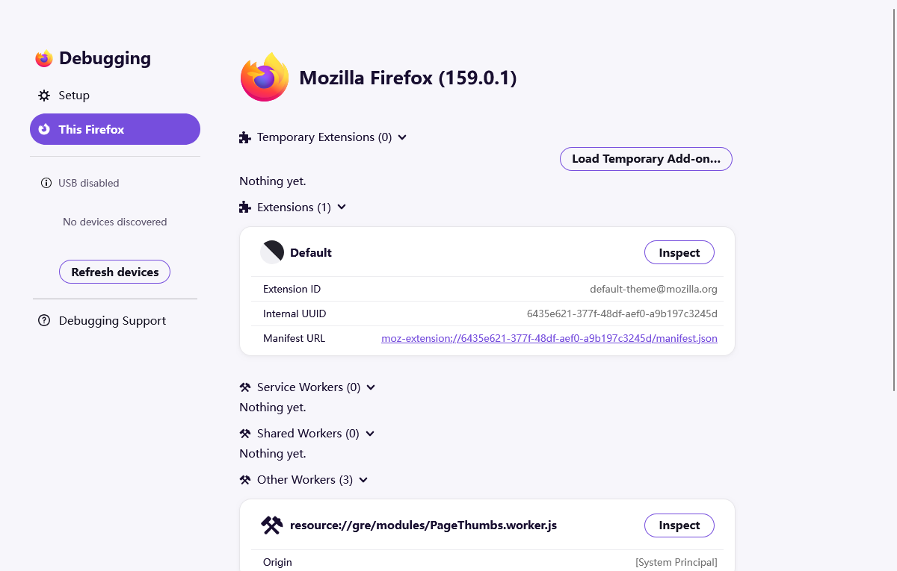
Firefox 临时安装 英文界面示例，点击图片查看原图。
Firefox 测试包官网测试包尚未签名，只能临时载入；退出 Firefox 后需要重新载入。
仅供 macOS Safari 18.4 及以上临时测试，尚未实机验证；旧版 Safari 需用 Xcode 打包，iPhone 和 iPad 不能直接安装此 ZIP。
Mac Safari 临时安装
- 开启开发者功能在 Safari「设置 → 高级」中勾选「显示网页开发者功能」（Safari 17 起）或「在菜单栏中显示开发菜单」。
- 允许未签名扩展打开 Safari「设置 → 开发者」，勾选「允许未签名扩展」；每次退出 Safari 后需要重新勾选。
- 加载测试包在「设置 → 开发者」中点击「添加临时扩展…」，选择下载的 ZIP 或解压后的文件夹，然后刷新论文页面。该入口从 Safari 18.4 起提供。
Safari 测试限制该包尚未在 Safari 真机验证，仅供支持临时扩展的 Mac Safari 测试；退出 Safari 或 24 小时后需重新加载。iPhone 和 iPad 不能直接安装此 ZIP。
查看 Apple 的临时扩展说明 ↗
安装 Zotero 插件
在文献库中查看、筛选和保存期刊指标。
下载后，在 Zotero 中打开「工具 → 插件」，通过齿轮菜单从文件安装。
安装清单声明支持 Zotero 7–10；已在 10.0.8 实测，7–9 尚未逐版测试。Zotero 6 不支持；v0.1.0 可升级至 v0.1.1，获取独立指标筛选、影响因子数值比较、新版侧栏及显示设置。安装步骤
- 下载插件点击上方按钮保存 Zotero XPI 文件，无需解压。
- 打开插件管理在 Zotero 顶部选择「工具 → 插件」。
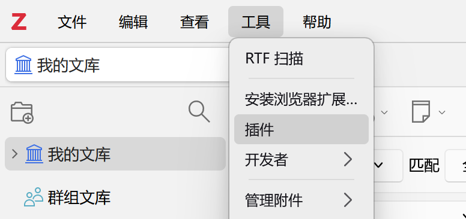
在「工具」菜单中选择「插件」。点击图片可查看原图。 - 从文件安装点击右上角齿轮，选择「Install Plugin From File…」，选中下载的 XPI；如有提示，重启 Zotero。
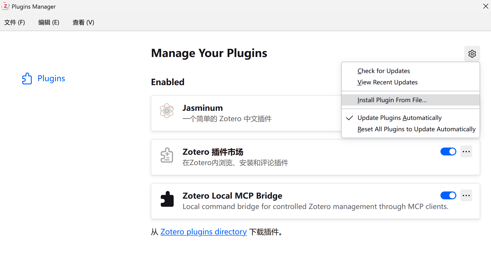
点击齿轮，然后选择「Install Plugin From File…」。点击图片可查看原图。 - 查看期刊或会议信息选择期刊论文或会议论文，查看列表中的 Journal Scout 列；如未显示，可在表头的列菜单中启用。
功能与数据说明
查看与筛选：在文献表格的 Journal Scout 列查看期刊和会议指标，选中文献后也可在右侧查看详情。高级搜索的字段菜单中，选择「Journal Scout → 影响因子、中科院分区、JCR 分区、Top 或 CCF 等级」等独立指标，无需选择「标签」。
影响因子数值筛选：选择「Journal Scout → 影响因子」，中间可选「等于」「不等于」「大于」「小于」，右侧输入数字，例如 10.5。小数按完整数值比较；要筛选 10 到 20 之间的文献，可添加「大于 10」和「小于 20」两条条件并匹配全部，也能与分区组合后保存搜索。没有影响因子的文献不会被当作 0。
兼容原生标签筛选：以下配图展示另一个独立入口：已有 Journal Scout 原生标签仍可在左侧标签栏或高级搜索的「标签」条件中筛选。它用于文本匹配；数值范围请使用上面的 Journal Scout 指标字段。
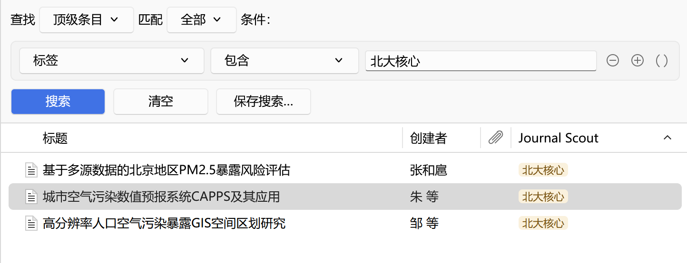
保存与同步：已确认的结果自动写入条目的 Extra（附加信息）区块及 Zotero 标签，并保留区块以外的原有内容和用户标签。条目的更改可能随 Zotero 同步，也可能出现在部分导出文件中；本地缓存可供同一期刊复用。
处理文库：筛选读取已归档到本地的指标，执行搜索不会重新请求网站。日常查看会逐步补全当前显示或选中的期刊和会议论文；需要完整筛选整个文库时，请先在主窗口选择文库，再进入「设置 → Journal Scout」，点击「补全文库期刊指标」，覆盖该文库的全部分类。设置页会显示进度，运行时提供「取消」按钮；取消后保留已归档结果，关闭设置后重新打开也能继续查看进度。插件优先复用已有归档和本地缓存，无法确认刊物或会议、只读或正在编辑的条目可能被跳过，未匹配或跳过的条目可稍后重试。使用独立指标搜索时需保持 Journal Scout 插件启用。
查询数据：插件使用条目的期刊名或 ISSN 查询 ScanSci 期刊服务，不发送论文全文或附件。会议论文按会议名称匹配 CCF 目录；插件内置 ABS / AJG、UTD24、FMS 和 ABDC 商科名单。未收录或无法确认的条目不会显示对应等级。
显示设置：侧栏按指标分项列出，标签保留所选配色、字号和圆角。点击侧栏的「显示设置」，或进入 Zotero「设置 → Journal Scout」，可选择「列表列与侧边栏」或「仅侧边栏」，并逐项勾选需要显示的标签。仅侧边栏模式会隐藏 Journal Scout 列；选择立即生效并保存在本机，完整指标仍归档到 Extra 和原生标签。「标签样式」中可调整配色、字号、圆角和间距。配色选框采用彩色圆角样式，文字间距与字号、圆角选项保持一致。
数据更新：已确认的期刊和会议记录会在本地复用；网站发布数据更新后，插件错峰优先更新当前查看的文献。
插件更新：发现更高的插件版本时，右侧面板会提示前往下载；下载后通过插件管理器从文件安装。已经安装 v0.1.0 的用户，可下载 v0.1.1 安装包，通过插件管理器从文件安装升级。
插件由 ScanSci 提供，Zotero 标识用于指示适用的软件。
更新说明
以下记录已发布的手动安装包；商店版以商店审核版本为准。
浏览器插件
- v0.1.102026.11.12 · 当前手动包
更新 CCF 2026 目录和 CCFT 2025 目录，支持 IEEE Xplore、DBLP 的会议标签；新增 ABS / AJG、UTD24、FMS 和 ABDC 商科期刊标签及数据版本提示；补齐 IEEE 期刊身份识别，改进重复 ISSN 匹配，并对更名期刊区分前刊指标；扩展网站与检索结果识别，补充 Web of Science 中国站（webofscience.clarivate.cn）适配，优化 ResearchGate、设置页和插件面板；提供 Mac Safari 临时测试包。AJG 使用 2024 版，期刊条目尚未逐条与官网名单核对；已安装同版本离线包的用户需重新下载以获取数据修订。部分网站与 Safari 测试包仍待进一步实测。
- v0.1.9.42026.11.06
在知网期刊论文标题下显示标签。
- v0.1.9.32026.11.06
修复部分中文期刊同名记录的匹配问题。
- v0.1.9.22026.11.04
增加鲜艳配色，精简插件面板。
- v0.1.92026.11.04
支持调整标题翻译的字号和颜色。
- v0.1.82026.10.29
扩展 Wiley、Copernicus 等出版平台的适配。
- v0.1.72026.10.29
修复 Google Scholar 标签重复和闪烁。
- v0.1.62026.10.29
改进 Google Scholar 个人主页和截断刊名的识别。
- v0.1.52026.10.29
停用本地更新助手，改为手动更新。
- v0.1.42026.10.29
尝试 Windows 自动更新；此方式已在后续版本停用。
- v0.1.22026.10.29
加快期刊标签显示。
- v0.1.12026.10.29
调整论文页面标签布局。
- v0.1.02026.10.29
发布首个浏览器测试版。
Zotero 插件
- v0.1.12026.11.12 · 当前版本
高级搜索新增独立的 Journal Scout 指标菜单，影响因子支持完整小数比较、组合条件及保存搜索。修复 IEEE 重复 ISSN、电子 ISSN 缺失时的匹配，补全 CVPR、NeurIPS 论文集名称识别，并按需重新核对旧缓存。侧栏采用指标清单布局，支持逐项选择显示指标、列表列与侧边栏模式切换，以及彩色圆角配色选框；文字间距与其他设置项一致。将「补全文库期刊指标」移入设置，运行时显示进度与取消按钮。保留完整归档、兼容原生标签筛选及数据版本更新提示。v0.1.0 用户可下载安装新版升级。
- v0.1.02026.11.12
发布 Zotero 插件，在文献列表和右侧面板显示期刊指标及 CCF 会议等级，将确认的信息保存到条目，支持本地复用和随 Zotero 同步。
网站覆盖
查看插件已适配的网站与页面。
清单依据现有手动安装包整理；部分网站按论文元数据尝试识别。具体效果取决于页面结构和期刊数据，商店版以实际安装版本为准。
| 网站 | 适配页面 | 说明 |
|---|---|---|
滚动至此时加载网站目录。
表格可上下及左右滚动